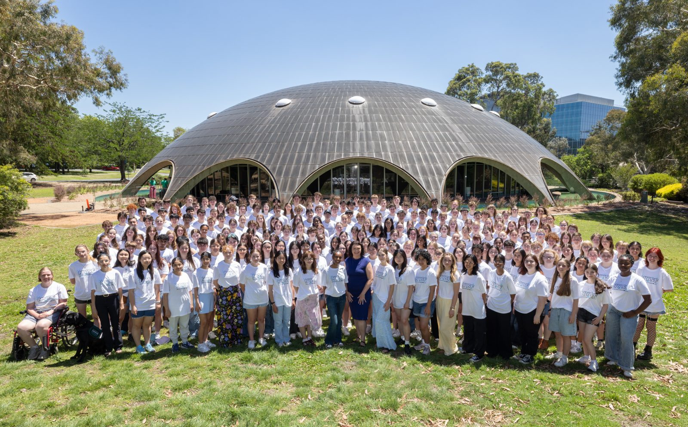

A working preview of the new site's design direction, plus the complete library of page modules it's built from.
The homepage shows the design direction in full; the module library shows the kit of parts each page is built from. This build incorporates your July feedback round: brand pattern, flare testimonials, rolling logo tickers, consistent footer, tabbed Get involved, board bios and more. Remaining placeholders (stories, annual report, Year 12 video, contact details) are marked and awaiting your content.

The complete, clickable NYSF site: homepage, the six audience hubs, programs, impact, resources, donate and more. Start here and navigate freely through the nav and links.
Open the prototype →